Introduction to imaging-based spatial transcriptomics analysis (10x Xenium breast cancer)
Dharmesh D. Bhuva
SAiGENCI, The University of AdelaideSouth Australian Health and Medical Research Institute (SAHMRI)Walter and Eliza Hall Institutedharmesh.bhuva@adelaide.edu.au
Chin Wee Tan
Walter and Eliza Hall InstituteThe University of Melbournecwtan@wehi.edu.au
Dec 2024
Source:vignettes/workflow_spatial_xenium.Rmd
workflow_spatial_xenium.Rmd
R version: R version 4.4.2 (2024-10-31)
Bioconductor version: 3.20
Package
version: 0.99.0
Introduction
Spatial molecular technologies have revolutionised the study of biological systems. We can now study cellular and sub-cellular structures in complex systems. However, these technologies generate complex datasets that require new computational approaches and ideas to analyse. Many of these pipelines are still being developed therefore what is state-of-the-art now will not remain so for too long. However, the biological aim of analysis will mostly remain the same with more being uncovered as computational methods advance. This workshop intends to demonstrate the types of biological questions that can be studied using spatial transcriptomics datasets. Our intention is NOT to use the state-of-the-art methods, but to show you how data can be analysed to study spatial hypotheses. As users get familiar with these ideologies, they can swap out older tools with newer, more powerful tools. As instructors, we hope to update this workshop as more and better tools become available. We look forward to receiving community contributions as well.
Pre-processing steps already performed
Data from the instrument comes in raw images that are often summerised to transcript tables. These tables are then coupled with immunofluorescence images for a few key proteins or marker such as DAPI which stains the nucleus, Pan-Cytokeratin which stains the membrane of cancer cells, a cocktail of membrane proteins, markers such as CD45 which stain immune cells, and a cocktail of cytoplasmic markers (technology specific). These proteins are used to perform cell segmentation as the measurements are obtained at the transcript level and not the cell level (as is the case with single-cell RNA-seq data). Platforms provide segmented data and users can opt to perform their own segmentation if needed. If you wish you re-segment the data yourself, you could try using methods such as BIDCell (Fu et al. 2024) that use a single cell reference dataset to perform segmentation using the marker proteins as well as transcriptomics measurements. Do note that vendors are constantly improving segmentation and recent improvements are accurate on difficult to segment cells such as neurons and astrocytes.
We will use the already segmented cell-level count data. We will also use a previously prepared SpatialExperiment object. If users want to prepare their own object, all they need is the cell matrix file, the feature table, the cell table and a table of spatial coordinates (if this information is not already in the cell table). With these, information on preparing your own SpatialExperiment object can be found in this package’s vignette. The design for this object is shown in the figure below.

Loading prepared data
The data we will use in this workshop is from the 10x Xenium platform. Since the objective of this workshop is to introduce you to spatial transcriptomics analysis, we do not work with the full dataset, which contains over 500,000 cells and instead opt to work with a smaller subset of the sample. This region contains interesting features and is therefore enough to showcase a complete spatial transcriptomics analysis workflow. The data used in this workshop is a window with the x coordinate in the interval (4800, 5800) and the y coordinate in the interval (8500, 9500). This window is shown in the context of the full tissue below.

data(idc)
# preview object
idc## class: SpatialExperiment
## dim: 541 7353
## metadata(0):
## assays(1): counts
## rownames(541): LDHA LUM ... NegControlCodeword_0503 BLANK_0087
## rowData names(2): gene genetype
## colnames(7353): IDC_117119 IDC_117120 ... IDC_9961 IDC_9962
## colData names(8): sample_id cell_id ... region technology
## reducedDimNames(0):
## mainExpName: NULL
## altExpNames(0):
## spatialCoords names(2) : x y
## imgData names(0):
# retrieve column (cell) annotations
colData(idc)## DataFrame with 7353 rows and 8 columns
## sample_id cell_id transcript_id overlaps_nucleus z_location
## <character> <character> <numeric> <numeric> <numeric>
## IDC_117119 IDC 117119 2.82081e+14 0.321782 24.4305
## IDC_117120 IDC 117120 2.82081e+14 0.339506 23.9980
## IDC_117355 IDC 117355 2.82081e+14 0.293333 22.2413
## IDC_117360 IDC 117360 2.82081e+14 0.671598 24.4488
## IDC_117364 IDC 117364 2.82081e+14 0.651515 24.8231
## ... ... ... ... ... ...
## IDC_9958 IDC 9958 2.82081e+14 0.594096 24.5974
## IDC_9959 IDC 9959 2.82081e+14 0.214844 24.2157
## IDC_9960 IDC 9960 2.82081e+14 0.581236 23.9020
## IDC_9961 IDC 9961 2.82081e+14 0.631579 23.5729
## IDC_9962 IDC 9962 2.82081e+14 0.134328 24.0547
## qv region technology
## <numeric> <character> <character>
## IDC_117119 33.2185 Stroma Xenium
## IDC_117120 33.5792 Stroma Xenium
## IDC_117355 32.9756 Stroma Xenium
## IDC_117360 31.6559 Stroma Xenium
## IDC_117364 30.4993 Stroma Xenium
## ... ... ... ...
## IDC_9958 31.0119 Stroma Xenium
## IDC_9959 33.2195 Stroma Xenium
## IDC_9960 32.1481 Stroma Xenium
## IDC_9961 32.3436 Stroma Xenium
## IDC_9962 32.1198 Stroma Xenium
# retrieve row (gene/probe) annotations
rowData(idc)## DataFrame with 541 rows and 2 columns
## gene genetype
## <character> <character>
## LDHA LDHA Gene
## LUM LUM Gene
## NNMT NNMT Gene
## THY1 THY1 Gene
## CXCR4 CXCR4 Gene
## ... ... ...
## CD36 CD36 Gene
## BLANK_0072 BLANK_0072 NegBlank
## BLANK_0186 BLANK_0186 NegBlank
## NegControlCodeword_0503 NegControlCodeword_0.. NegCW
## BLANK_0087 BLANK_0087 NegBlank
# retrieve spatial coordinates
head(spatialCoords(idc))## x y
## IDC_117119 5797.325 9477.576
## IDC_117120 5792.309 9482.465
## IDC_117355 5792.248 9414.256
## IDC_117360 5797.229 9425.416
## IDC_117364 5795.692 9436.389
## IDC_117367 5791.597 9441.061
# retrieve counts - top 5 cells and genes
counts(idc)[1:5, 1:5]## 5 x 5 sparse Matrix of class "dgCMatrix"
## IDC_117119 IDC_117120 IDC_117355 IDC_117360 IDC_117364
## LDHA 4 2 2 8 6
## LUM 13 18 . 4 16
## NNMT 2 2 . . .
## THY1 . . . . 1
## CXCR4 1 . . . .
# set default point size to 0.5 for this report
update_geom_defaults(geom = "point", new = list(size = 0.5))
plotSpatial(idc, colour = region) +
scale_colour_brewer(palette = "Dark2") +
# improve legend visibility
guides(colour = guide_legend(override.aes = list(shape = 15, size = 5)))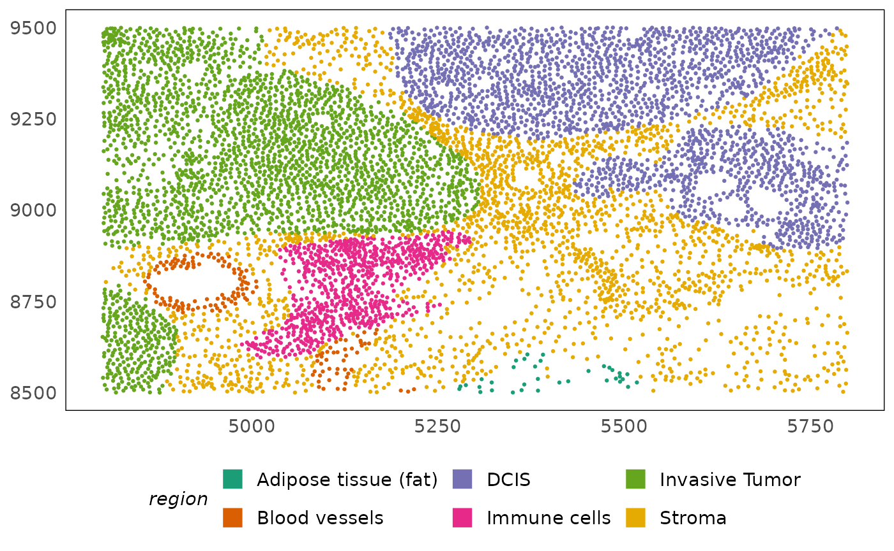
For users interested in analysing the whole dataset, it can be obtained using the code below.
Please note that the full dataset contains over 500,000 cells and will not scale for the purpose of this workshop. If interested, run the code below on your own laptop.
## DO NOT RUN during the workshop as the data are large and could crash your session
if (!require("ExperimentHub", quietly = TRUE)) {
BiocManager::install("ExperimentHub")
}
if (!require("SubcellularSpatialData", quietly = TRUE)) {
BiocManager::install("SubcellularSpatialData")
}
# load the metadata from the ExperimentHub
eh = ExperimentHub()
# download the transcript-level data
tx = eh[["EH8567"]]
# filter the IDC sample
tx = tx[tx$sample_id == "IDC", ]
# summarise measurements for each cell
idc = tx2spe(tx)Quality control
Most spatial transcriptomics assays include negative control probes to aid in quality control. These probes do not bind to the transcripts of interest (signal), so represent noise in the assay. There are three different types of negative controls in the 10x Xenium assay. As these vary across technologies and serve different purposes, we treat them equally for our analysis and assess them collectively. The breakdown of the different types of negative control probes is given below.
table(rowData(idc)$genetype)##
## Gene NegBlank NegCW NegPrb
## 380 100 41 20We now use compute and visualise quality control metrics for each cell. Some of the key metrics we assess are:
-
sumortotal- Total number of transcripts and negative control probes per cell (more commonly called the library size). -
detected- Number of transcripts and negative control probes detected per cell (count > 0). -
subsets_neg_sum- Count of negative control probes (noise) per cell. -
subsets_neg_detected- Number of negative control probes expressed per cell (count > 0). -
subsets_neg_percent-subsets_neg_sum/sum.
Additionally, the vendor (10x) provides their own summary of quality
through the qv score. This is usually provided per detected
measurements but we compute the average per cell when deriving cellular
summaries. Likewise, we compute the number of transcripts allocated to
the nucleus (overlaps_nucleus).
# identify the negative control probes
is_neg = rowData(idc)$genetype != "Gene"
# compute QC metrics for each cell
idc = addPerCellQCMetrics(idc, subsets = list("neg" = is_neg))Quality control is all about visualisation!
One of the best ways to understand the data and identify problematic cells or regions is to visualise the QC metrics. We need to visualise the metrics in various contexts to better understand what cells appear of poor qaulity. As such, we usually plot metrics against each other, we visualise them in space, and we visualise them in the context of the higher dimensional structure of the data. To aid the latter, we will compute lower dimensional representations using the t-distributed stochastic neighbours embedding (t-SNE). As the t-SNE embedding can be computationally intensive, we usually perform PCA prior to t-SNE. This approach to quality control is identical to that used for single-cell RNA-seq analysis.
# compute log counts - to fix the skew with counts
logcounts(idc) = log2(counts(idc) + 1)
# compute PCA
idc = runPCA(idc)
# compute t-SNE
idc = runTSNE(idc, dimred = "PCA")We plot the sum (library size) against the number of
genes detected, and colouring the points based on the quality score
(qv). We see that as more genes are detected, more
measurements are obtained (library size increases). There are cells
where the library size is very low and the number of genes detected is
low as well. Considering the smaller panel size of 380 target genes in
this assay, we expect the number of genes detected in some cell types to
be small. However, if we detect very few genes in a cell, we are less
likely to obtain any useful information from them. As such, poor quality
cells can be defined as those with very low library sizes and number of
genes detected.
plotColData(idc, "detected", "sum", colour_by = "qv") +
geom_hline(yintercept = 20, lty = 2) +
geom_vline(xintercept = 10, lty = 2)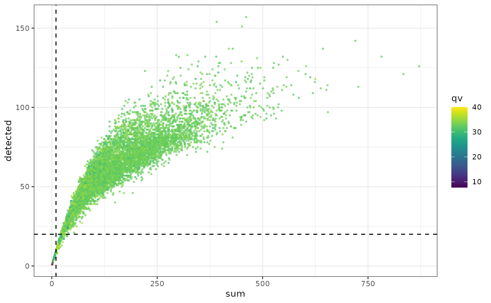
However, we need to identify appropriate thresholds to classify poor quality cells. As the panel sizes and compositions for these emerging technologies are variable, there are no standards as of yet for filtering. For instance, immune cells will always have smaller library sizes and potentially a smaller number of genes expressed in a targetted panel as each cell type may be represented by a few marker genes. Additionally, these cells are smaller in size therefore could be filtered out using an area-based filter. Desipte the lack of standards, the extreme cases where cells express fewer than 10 genes and have fewer than 10-20 detections are clearly of poor quality. As such, we can start with these thresholds and adjust based on other metrics and visualisations.
# t-SNE plot
p1 = plotDR(idc, dimred = "TSNE", colour = sum, alpha = 0.75, size = 0.5) +
scale_colour_viridis_c(option = "F") +
labs(x = "TSNE1", y = "TSNE2") +
theme(legend.position = "bottom")
# spatial plot
p2 = plotSpatial(idc, colour = sum, alpha = 0.75) +
scale_colour_viridis_c(option = "F") +
theme(legend.position = "bottom")
p1 + p2 + plot_annotation(title = "Sum (library size)")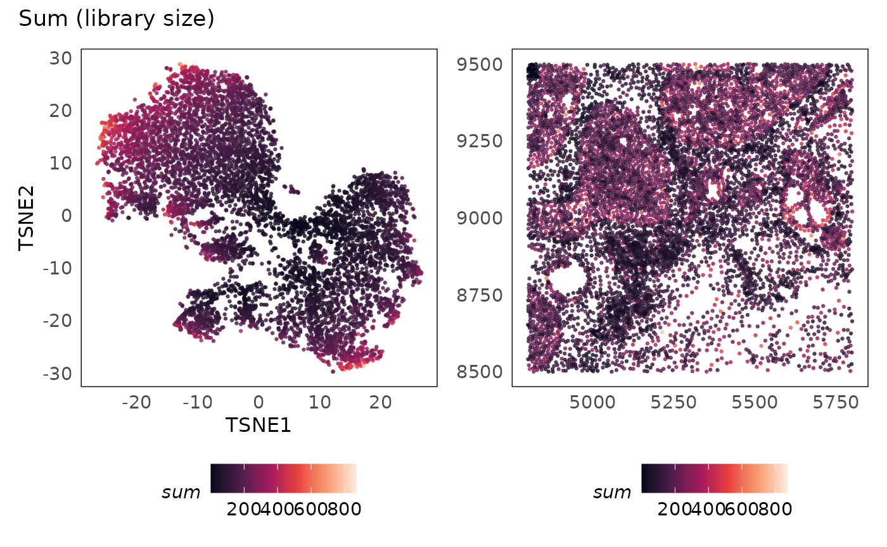
# t-SNE plot
p1 = plotDR(idc, dimred = "TSNE", colour = detected, alpha = 0.75, size = 0.5) +
scale_colour_viridis_c(option = "F") +
labs(x = "TSNE1", y = "TSNE2") +
theme(legend.position = "bottom")
# spatial plot
p2 = plotSpatial(idc, colour = detected, alpha = 0.75) +
scale_colour_viridis_c(option = "F") +
theme(legend.position = "bottom")
p1 + p2 + plot_annotation(title = "Detected (number of genes expressed)")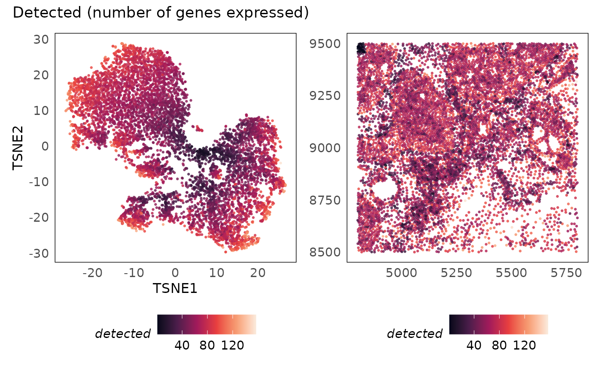
# t-SNE plot
p1 = plotDR(idc, dimred = "TSNE", colour = qv, alpha = 0.75, size = 0.5) +
scale_colour_viridis_c(option = "F") +
labs(x = "TSNE1", y = "TSNE2") +
theme(legend.position = "bottom")
# spatial plot
p2 = plotSpatial(idc, colour = qv, alpha = 0.75) +
scale_colour_viridis_c(option = "F") +
theme(legend.position = "bottom")
p1 + p2 + plot_annotation(title = "Quality score")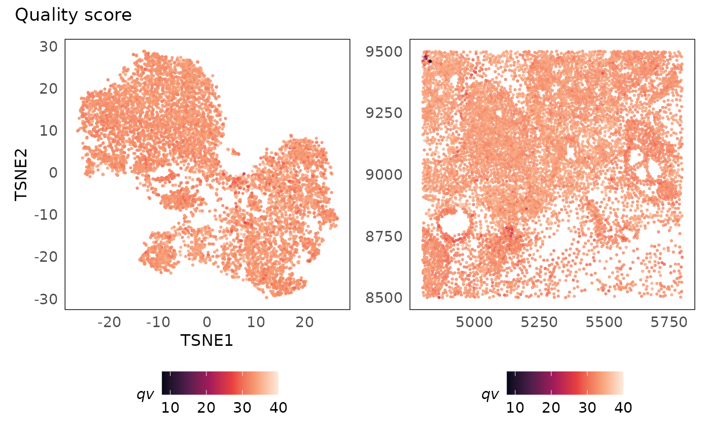
# t-SNE plot
p1 = plotDR(idc, dimred = "TSNE", colour = subsets_neg_percent, alpha = 0.75, size = 0.5) +
scale_colour_viridis_c(option = "F", limits = c(0, 2), oob = scales::squish) +
labs(x = "TSNE1", y = "TSNE2") +
theme(legend.position = "bottom")
# spatial plot
p2 = plotSpatial(idc, colour = subsets_neg_percent, alpha = 0.75) +
scale_colour_viridis_c(option = "F", limits = c(0, 2), oob = scales::squish) +
theme(legend.position = "bottom")
p1 + p2 + plot_annotation(title = "Proportion of negative control probes")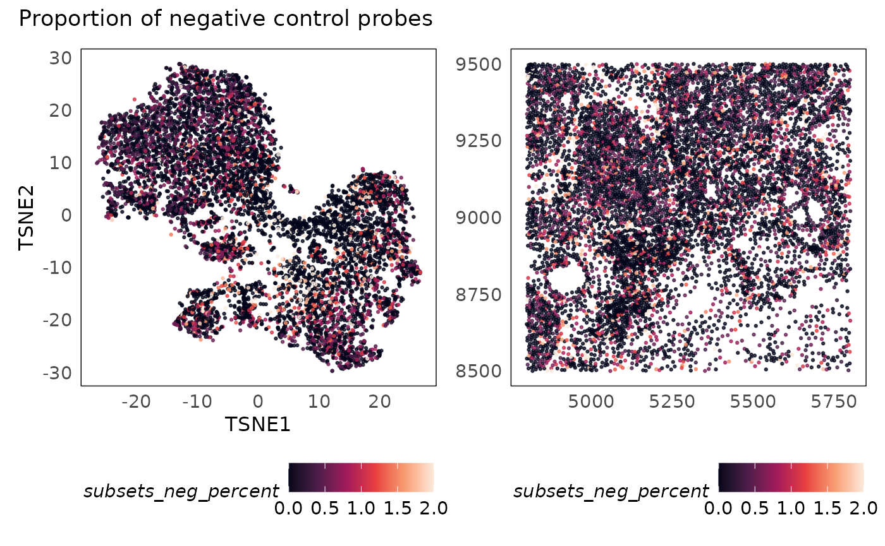
# t-SNE plot
p1 = plotDR(idc, dimred = "TSNE", colour = overlaps_nucleus, alpha = 0.75, size = 0.5) +
scale_colour_viridis_c(option = "F") +
labs(x = "TSNE1", y = "TSNE2") +
theme(legend.position = "bottom")
# spatial plot
p2 = plotSpatial(idc, colour = overlaps_nucleus, alpha = 0.75) +
scale_colour_viridis_c(option = "F") +
theme(legend.position = "bottom")
p1 + p2 + plot_annotation(title = "Proportion of nuclear transcripts")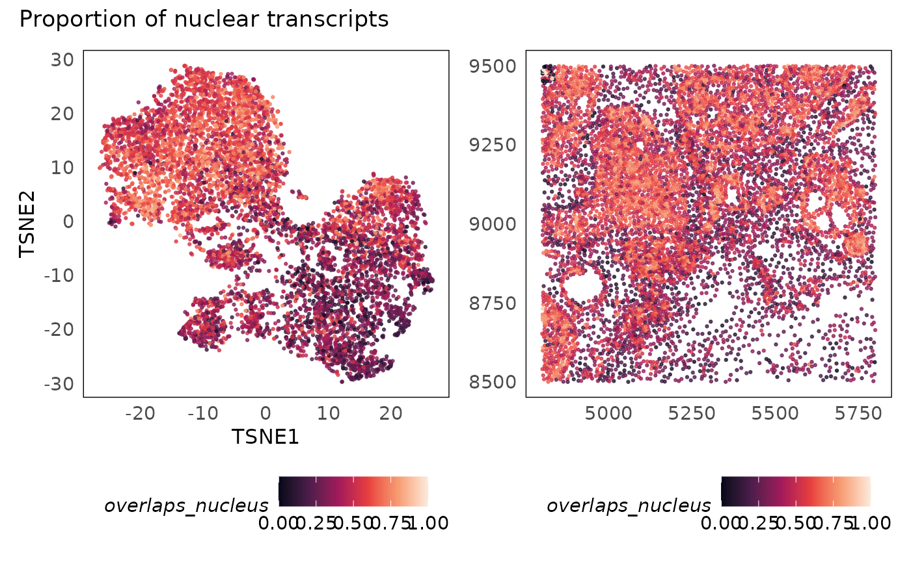
Having visualised the quality metrics and their distrition across space and the genomic dimensions, we can now begin to test threshold values. We want to remove low quality cells but we have to be careful not to introduce bias (e.g., by preferentially removing biological entities such as regions or cells).
Try modifying the thresholds below to see the effect of over- or under- filtering.
- What happens when you set the
sumthreshold to 100? - What about setting the
detectedthreshold to 50?
thresh_sum = 20
thresh_detected = 10
# classify cells to keep
idc$keep = idc$sum > thresh_sum & idc$detected > thresh_detected
# t-SNE plot
p1 = plotDR(idc, dimred = "TSNE", colour = keep, alpha = 0.75, size = 0.5) +
scale_color_brewer(palette = "Set1") +
labs(x = "TSNE1", y = "TSNE2") +
theme(legend.position = "bottom") +
guides(colour = guide_legend(override.aes = list(shape = 15, size = 5)))
# spatial plot
p2 = plotSpatial(idc, colour = keep, alpha = 0.75) +
scale_color_brewer(palette = "Set1") +
theme(legend.position = "bottom") +
guides(colour = guide_legend(override.aes = list(shape = 15, size = 5)))
p1 + p2 + plot_annotation(title = "Cells retained after QC filtering")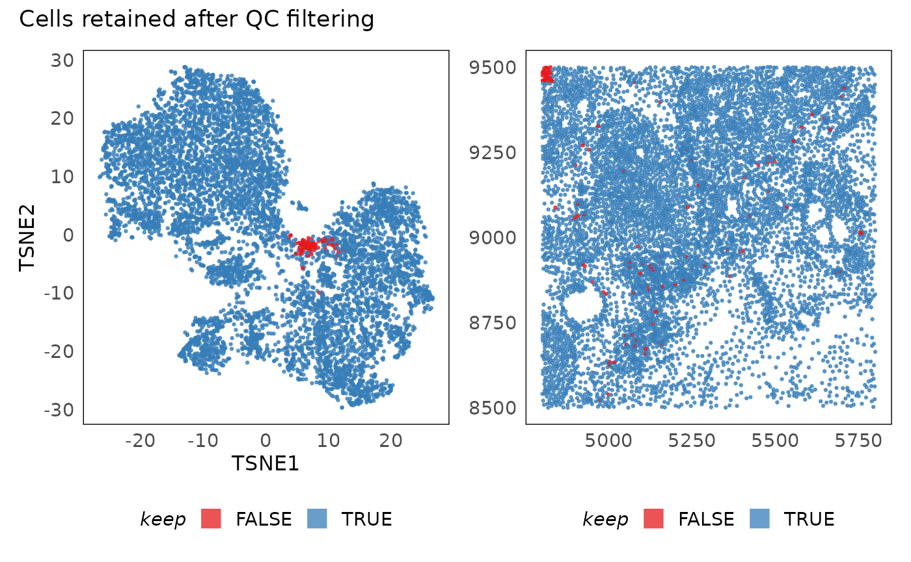
In practice, after poor quality cells are filtered out, we tend to see clearer separation of clusters in the t-SNE (or equivalent visualisations). We also notice that poor quality cells often seem like intermmediate states between clusters in these plots. Additionally, they tend to be randomly distributed in space. If they are concentrated in some sub-regions (as above - top left corner), it is usually due to technical reasons. In the above plot, we see a clear rectangular section that is of poor quality. It is unlikely that biology would be present in such a regular shape therefore we can use that region as a guide in selecting thresholds. Having selected the thresholds, we now apply them and remove the negative control probes from donwstream analysis.
# apply the filtering
idc = idc[, idc$keep]
# remove negative probes
idc = idc[!is_neg, ]Newer quality control tools are being developed and are currently under peer-review. These include SpotSweeper (Totty, Hicks, and Guo 2024) and SpaceTrooper. As these software are not deposited to more permanent repositories, we do not use them in this workshop. We advise advanced users to use these tools for their QC as they help come up with additional QC summaries for each cell or region in space. SpaceTrooper for instance, computes a flag score that penalises cells that are too large or small, and whose aspect ratio is large. While these filters may make sense in most systems, they could penalise stomal or neuronal cells that are elongated and whose aspect ratio will be very large. Therefore always remember that QC is relative the biological system being studied.
As these technologies are still emerging, all quality control metrics should be evaluated on a case-by-case basis depending on the platform, panel set, and tissue. Knowing the biology to expect or what is definitely NOT biology helps in making these decisions. As any experienced bioinformatician will tell you, you will vary these thresholds a few times throughout your analysis because you learn more about the data, biology, and platform as you analyse the data. This cyclical approach can introduce biases so always rely on multiple avenues of evidence before changing parameters.
Normalisation
Above we plot the sum, which is commonly known as the
library size, for the purpose of quality control. Assessing the library
size is helpful in identifying poor quality cells. Beyond QC, variation
in library size can affect donwstream analysis as it represents
measurement bias. A gene may appear to be highly expressed in some cells
simply because more measurements were sampled from the cell, and not
because the gene is truly highly expressed. Whether it is
sequencing-based or imaging-based transcriptomics, we are always
sampling from the true pool of transcripts and are therefore likely to
have library size variation.
idc$logLS = log2(idc$sum + 1)
plotSpatial(idc, colour = logLS) +
scale_colour_viridis_c(option = "F") +
theme(legend.position = "bottom")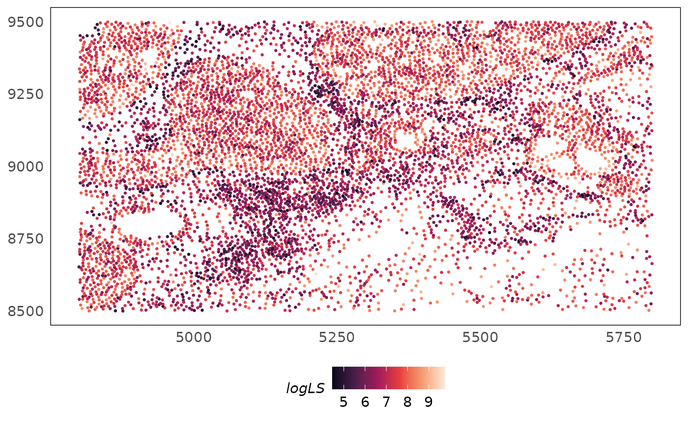
To remove these library size biases, we perform library size normalisation. As measurements are independent in bulk and single-cell RNA-seq (reactions happen independently for each sample/cell), each cell or sample can be normalised independently by computing sample/cell-specific adjustment factors. Measurements are locally dependent in spatial transcriptomics datasets therefore library size effects confound biology (Bhuva et al. 2024). The plot above show this clearly as the technical effect of library size is already showing tissue structures. These can be due to various causes such as:
- The tissue structure in one region is more rigid, thereby making it difficult for reagents to permeate.
- Reagents distributed unevenly due to technical issues leading to a sub-region within a tissue region being under sampled.
In both cases, each cell cannot be normalised independently as nearby cells are likely to experience similar technical effects. To tackle this, our team has developed the SpaNorm normalisation method that uses spatial dependence to decouple technical and biological effects (Salim et al. 2024). SpaNorm uses a spatially constrained regularised generalised linear model to model library size effects and subsequently adjust the data.

The key parameters for SpaNorm normalisation that need to be adjusted are:
-
sample.p- This is the proportion of the data that is sub-sampled to fit the regularised GLM. As spatial transcriptomics datasets are very large, the model can be approximated using by sampling. In practice, we see that ~50,000 cells in a dataset with 500,000 cells works well enough under the assumption that all possible cellular states are sampled evenly across the tissue. This is likely to be true in most cases. Below we use half the cells to fit the model (you can tweak this to 1 to use all cells). -
df.tps- Spatial dependence is modelled using thin plate spline functions. This parameter controls the degrees of freedom (complexity) of the function. Complex functions will fit the data better but could overfit therefore in practice, we see that 6-10 degrees of freedom are generally good enough. If the degrees of freedom are increased, regularisation should also be increased (lambda.aparameter).
set.seed(1000)
# perform SpaNorm normalisation
idc = SpaNorm(idc, sample.p = 0.5, df.tps = 6)Above, the model is fit and the default adjustment,
logPAC, is computed. Alternative adjustments such as the
mean biology (meanbio), pearson residuals
(pearson), and median biology (median) can be
computed as well (this will be faster as the fit does not need to be
repeated).
# compute mean biology
idc_mean = SpaNorm(idc, adj.method = "meanbio")
p1 = plotSpatial(idc, what = "expression", assay = "logcounts", colour = EPCAM, alpha = 0.75) +
scale_colour_viridis_c(option = "F") +
ggtitle("Normalised expression") +
theme(legend.position = "bottom")
p2 = plotSpatial(idc_mean, what = "expression", assay = "logcounts", colour = EPCAM, alpha = 0.75) +
scale_colour_viridis_c(option = "F") +
ggtitle("Mean from SpaNorm model") +
theme(legend.position = "bottom")
p1 + p2 + plot_annotation(title = "Proportion of nuclear transcripts")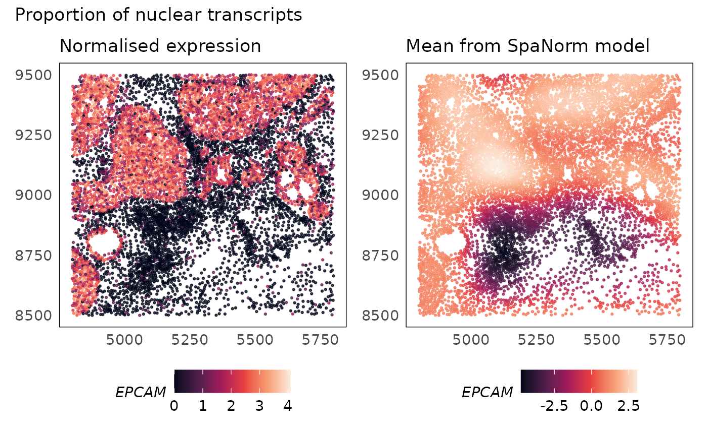
EPCAM is an epithelial cell marker gene that will also be expressed in breast cancer cells that are of epithelial origin. The SpaNorm model correctly models the regions where the cancer cells exist (mean) and is able to normalise technical effects without affecting the biology.
Library size normalisation is important to ensure technical variation is removed from gene expression. In the most extreme cases, a gene that is highly expressed in a region of interest may seem to be lowly expressed because of a drop in library sizes in said region (see manuscript). We have seen that negative probes across most technologies are also capturing library size effects very well and are experimenting with using these to model technical variation and normalise data. In some technologies/datasets, these are very lowly expressed, not because of better data quality but by design as well, and therefore would NOT faithfully represent technical variation. As with every other step, this is still an active area of research.
Cell typing
Cell typing can be performed using various approaches. Most of these were developed for the analysis of single-cell RNA-seq datasets and port across well to spatial transcriptomics datasets. The two common strategies are reference-based and reference-free annotations. In the former, annotations are mapped across from a previously annotated dataset. For a thorough discussion on this topic, review the Orchestrating Single-Cell Analysis (OSCA) with Bioconductor book (Amezquita et al. 2020). Here, we use the SingleR package (Aran et al. 2019) along with a reference breast cancer dataset (Wu et al. 2021). The processed dataset can be downloaded from Curated Cancer Cell Atlas.
SingleR is a simple yet powerful algorithm that only requires a
single prototype of what the cell type’s expression profile should look
like. As such, counts are aggregated (pseudobulked) across cells to form
a reference dataset where a single expression vector is created for each
cell type. Aggregation is performed using the
scater::aggregateAcrossCells function. As the original
dataset contains >96,000 cells, we only provide the aggregated counts
for this workshop.
# load reference dataset - Wu et al., Nat Genetics, 2021
data(ref_wu)
ref_wu## class: SingleCellExperiment
## dim: 375 13
## metadata(0):
## assays(2): counts logcounts
## rownames(375): LDHA LUM ... TAC1 CD36
## rowData names(0):
## colnames(13): B_cell Dendritic ... Plasmablast T_cell
## colData names(2): label.cell_type ncells
## reducedDimNames(0):
## mainExpName: NULL
## altExpNames(0):
# cell types in the reference dataset
ref_wu$label.cell_type## [1] "B_cell" "Dendritic" "Endothelial" "Epithelial" "Fibroblast"
## [6] "Macrophage" "Malignant" "Monocyte" "Myeloid" "NK_cell"
## [11] "Pericyte" "Plasmablast" "T_cell"
# predict cell types using SingleR
prediction = SingleR(test = idc, ref = ref_wu, labels = ref_wu$label.cell_type)
# add prediction to the SpatialExperiment object
idc$cell_type = prediction$labels
plotSpatial(idc, colour = cell_type, alpha = 0.75) +
scale_colour_brewer(palette = "Paired", na.value = "#333333") +
ggtitle("Predicted cell type") +
theme(legend.position = "bottom") +
guides(colour = guide_legend(override.aes = list(shape = 15, size = 5)))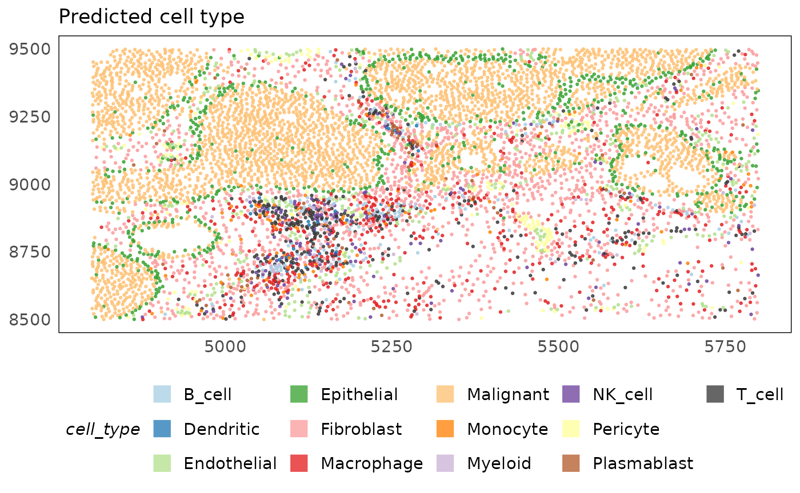
Spatial domain identification
Regions were annotated by an expert pathologist in our dataset. However, this is not always feasible, either due to access to a pathologist, or because the features are not visible in histology images alone. In such instances, a computational approach is required to identify spatial domains or cellular niches. These domains are generally, but not always, defined based on the homogeneity of biology. As this is still a developing area, there are many algorithms available, however, they generally fall within two broad categories of methods:
- Cell type-based - These methods use the cell type information to identify regions where the cell type composition is homogeneous.
- Expression-based - These methods use the full expression profile of cells to identify regions of the tissue with homogeneous gene expression profiles.
Approach 1 - Cell type-based domain identification
These methods use the cell types annotated in the previous type to
determine the homogeneity of cell types within a local region of space
around each cell. The hoodscanR
method is one such method that computes the probability of each cell
type being in a local neighbourhood of each cell in the dataset (Liu et al. 2024). The neighbourhood of each
cell is determined based on the k parameter which specifies
how many of the nearest neighbouring cells should be used to estimate
the cell type probabilities.
library(hoodscanR)
# find neighbouring cells
nb_cells = findNearCells(idc, k = 100, anno_col = "cell_type")
nb_cells$cells[1:5, 1:5]## nearest_cell_1 nearest_cell_2 nearest_cell_3 nearest_cell_4
## IDC_117119 Fibroblast Fibroblast Macrophage Fibroblast
## IDC_117120 Fibroblast Fibroblast Macrophage Fibroblast
## IDC_117355 Epithelial Malignant Epithelial Malignant
## IDC_117360 Malignant Fibroblast Malignant Fibroblast
## IDC_117364 Fibroblast Epithelial Malignant Fibroblast
## nearest_cell_5
## IDC_117119 Fibroblast
## IDC_117120 Fibroblast
## IDC_117355 Malignant
## IDC_117360 Malignant
## IDC_117364 Fibroblast
nb_cells$distance[1:5, 1:5]## nearest_cell_1 nearest_cell_2 nearest_cell_3 nearest_cell_4
## IDC_117119 7.005005 15.71269 17.01138 22.21755
## IDC_117120 7.005005 9.36519 12.30334 16.66310
## IDC_117355 12.221484 15.25754 18.88100 21.45094
## IDC_117360 10.578974 11.07993 12.22148 16.62831
## IDC_117364 6.212902 11.07993 11.53238 12.04583
## nearest_cell_5
## IDC_117119 23.05663
## IDC_117120 16.72835
## IDC_117355 21.46237
## IDC_117360 18.19916
## IDC_117364 14.39141
# estimate proportion of each cell type in the neighbourhood of each cell
probmat = scanHoods(nb_cells$distance)
dim(probmat)## [1] 7237 100
# compute probability of each each cell type in the neighbour hood of each cell
neighbourhoods = mergeByGroup(probmat, nb_cells$cells)
neighbourhoods[1:5, 1:5]## B_cell Dendritic Endothelial Epithelial Fibroblast
## IDC_117119 0 0 2.562940e-03 2.633435e-04 0.7917981
## IDC_117120 0 0 7.345686e-03 8.343366e-05 0.7423585
## IDC_117355 0 0 3.146637e-09 2.572446e-01 0.1219366
## IDC_117360 0 0 4.986331e-08 2.904581e-02 0.3885142
## IDC_117364 0 0 1.674673e-06 1.448684e-01 0.4427996
# add neighbourhood information to the SpatialExperiment object
idc = mergeHoodSpe(idc, neighbourhoods)Once these probabilies are assigned around each cell, a secondary clustering can be performed using any desired method. The package currently only supports k-means clustering on the neighbourhood matrix but advanced users can cluster the matrix directly using their preferred method.
# identify spatial domains based on neighbourhood composition (5 clusters)
set.seed(100)
idc = clustByHood(idc, pm_cols = colnames(neighbourhoods), k = 5, val_names = "clusters")
# plot predictions
p1 = plotSpatial(idc, colour = clusters, alpha = 0.75) +
scale_colour_brewer(palette = "Paired", na.value = "#333333", name = "predicted") +
ggtitle("Predicted pathology") +
theme(legend.position = "bottom") +
guides(colour = guide_legend(nrow = 3, override.aes = list(shape = 15, size = 5)))
p2 = plotSpatial(idc, colour = region) +
scale_colour_brewer(palette = "Dark2") +
ggtitle("Pathology annotations") +
guides(colour = guide_legend(nrow = 3, override.aes = list(shape = 15, size = 5)))
p1 + p2 + plot_annotation(title = "Spatial domain identification")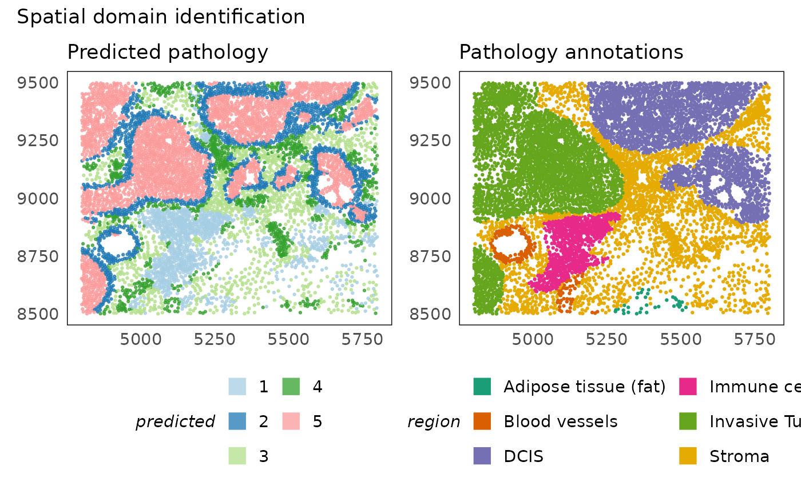
The plot above shows that hoodscanR is able to differentiate the key regions and is clearly able to separate the distinct DCIS lesions. It is also able to identify the layer of cells separating the tumour lesions from the stroma. However, it is unable to distinguish between the invasive and DCIS regions. This is because our current annotation of cell types does not discriminate between the different cellular states of cells in these regions. This is one limitation of cell type based methods - that is, they need the labels of all possible cell types and cell states we are interested. However, the power of these methods is that we can study the neighbourhood composition directly as this was used to generate the domains.
plotProbDist(idc, pm_cols = colnames(neighbourhoods), by_cluster = TRUE, plot_all = TRUE, show_clusters = as.character(seq(5)))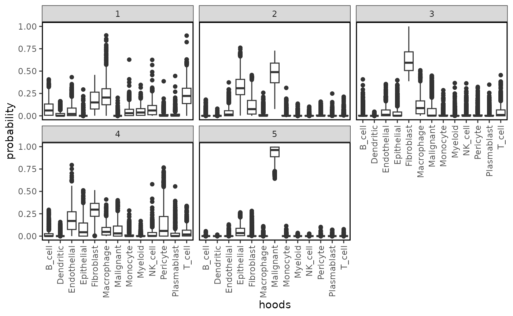
we see that cluster 3 is entirely defined by the presence of malignant cells while cluster 5 captures the tumour lining epithelial cells as well as fibroblasts. Cluster 2 is composed of the immune cells, particularly T cells, B cells and macrophages, indicating the formation of lymphoid aggregates. Lymphoid aggregates are interesting structures in the context of solid cancers, and depending on their expression profile, these can be beneficial for patients.
# calculate metrics of heterogeneity - entropy
idc = calcMetrics(idc, pm_cols = colnames(neighbourhoods))
# plot metric
p1 = plotSpatial(idc, colour = cell_type, alpha = 0.75) +
scale_colour_brewer(palette = "Paired", na.value = "#333333") +
ggtitle("Predicted cell type") +
theme(legend.position = "bottom") +
guides(colour = guide_legend(override.aes = list(shape = 15, size = 5)))
p2 = plotSpatial(idc, colour = entropy, alpha = 0.75) +
scale_colour_viridis_c(option = "G") +
ggtitle("Cell type heterogeneity") +
theme(legend.position = "bottom") +
guides(colour = guide_legend(override.aes = list(shape = 15, size = 5)))
p1 + p2 + plot_annotation(title = "Cell type heterogeneity")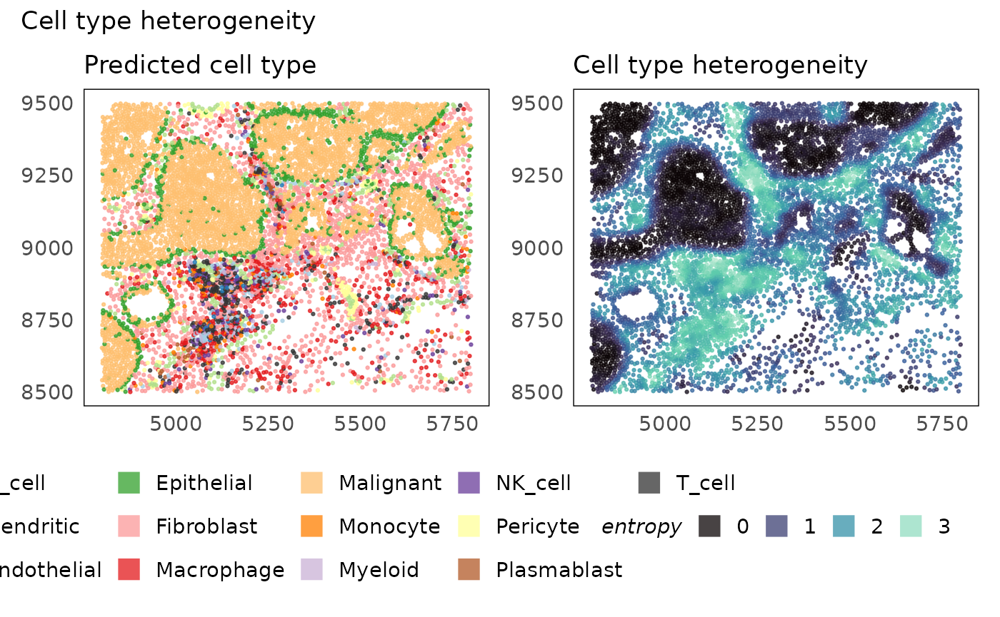
Looking at the heterogeneity of cell types across space, we see that cell composition is very homogeneous within the tumour regions while it is highest in the lymphoid aggregates which are often characterised by the presence of various different types of immune cells. We emphasise again that the homogeneity of the tumour regions is determined based on their cell type call alone and not on their expression profile. As such, the tumours themselves could be heterogeneous if finer cell typing or cell phenotyping were to be performed. Additionally, any errors made in cell typing will propage to domain identification.
The approach that follows allows an unbiased identification of domains using the gene expression data directly.
Approach 2 - Expression-based domain identification
Expression-based methods can be further sub-categorised into three categories:
- Graph Neural Network (GNN) or Graph Convolutional Network (GCN) based algorithms.
- Probabilistic models based on markov random fields.
- Neighbourhood diffusion followed by graph-based clustering.
We note that this is not a comprehensive survey of the literature but just a summary of the most popular methods in this space. The first two approaches can be very powerful, however, are time consuming and will not always scale with larger datasets. Diffusion followed by graph-clustering is a relatively simple, yet powerful approach that scales to large datasets. Banksy is one such algorithm that first shares information within a local neighbourhood, and then performs a standard single-cell RNA-seq inspired graph-based clustering to identify spatial domains (Singhal et al. 2024).
The following key parameters determine the final clustering results:
-
lambda- This controls the degree of information sharing in the neighbourhood (range of [0, 1]) where larger values result in higher diffusion and thereby smoother clusters. -
resolution- The resolution parameter for the graph-based clustering using either the Louvain or Leiden algorithms. Likewise, there are other parameters to control the graph-based clustering. The OSCA book discusses choices for these parameters in depth. -
npcs- The number of principal components to use to condense the feature space. The OSCA book discusses choices for this in depth. -
k_geom- The number of nearest neighbours used to share information. The authors recommend values within [15, 30] and note that variation is minimal within this range.
# parameters
lambda = 0.2
npcs = 50
k_geom = 30
res = 0.8
# compute the features required by Banksy
idc = Banksy::computeBanksy(idc, assay_name = "logcounts", k_geom = k_geom)
# compute PCA on the features
set.seed(1000)
idc = Banksy::runBanksyPCA(idc, lambda = lambda, npcs = npcs)
# perform graph-based clusering
set.seed(1000)
idc = Banksy::clusterBanksy(idc, lambda = lambda, npcs = npcs, resolution = res)
# store to the column predicted_region
idc$predicted_region = idc$`clust_M0_lam0.2_k50_res0.8`
plotSpatial(idc, colour = predicted_region, alpha = 0.75) +
scale_colour_brewer(palette = "Paired", na.value = "#333333", name = "predicted") +
ggtitle("Mean from SpaNorm model") +
theme(legend.position = "bottom") +
guides(colour = guide_legend(override.aes = list(shape = 15, size = 5)))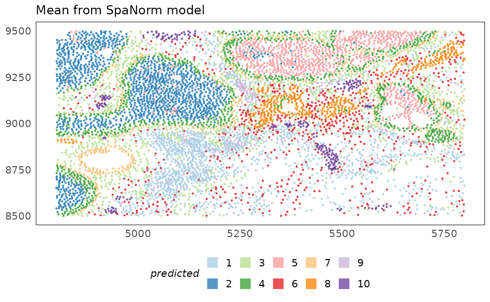
Try varying the parameters to see how the clustering changes. Do note
that the results are automatically stored in a new column in the
colData. Unfortunately, the function does not allow specification of the
new column name so the only approach is to look at the column names
using colnames(colData(idc)) and find the name of the new
column (usually the last one) containing the clustering results. We then
store these to a column of our choosing to make it easier to reference
it.
Looking back at the original annotations, we see that clusters 3 and 5 represent the DCIS and Invasive tumours respectively. Similarly, cluster 10 represents the blood vessel annotated by the pathologist. Computational analysis reveals additional structures present in the tissue that may differ only in the genomic measurements. Clustes 6 and 7 for instance seems to represent different structures in the stroma, some of which may be visible in the histology image but are intestive to label manually. We also find cluster 4 which represents a boundary of cells surrounding invasive and DCIS lesions.
p1 = plotSpatial(idc, colour = predicted_region, alpha = 0.75) +
scale_colour_brewer(palette = "Paired", na.value = "#333333", name = "predicted") +
ggtitle("Predicted pathology") +
theme(legend.position = "bottom") +
guides(colour = guide_legend(nrow = 3, override.aes = list(shape = 15, size = 5)))
p2 = plotSpatial(idc, colour = region) +
scale_colour_brewer(palette = "Dark2") +
ggtitle("Pathology annotations") +
guides(colour = guide_legend(nrow = 3, override.aes = list(shape = 15, size = 5)))
p1 + p2 + plot_annotation(title = "Spatial domain identification")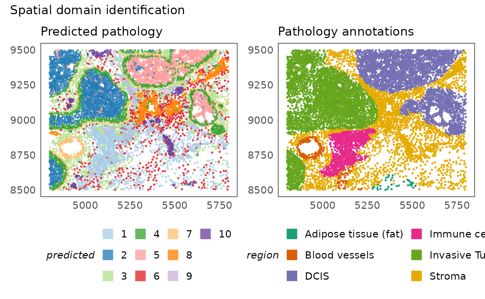
The choice of the better approach amongst the two demonstrated here should be based on the question of interest. They both have their strengths and limitations. BANKSY allows us to identify within tumour differences because it assesses the expression profile directly, however, it does not offer any additional interpretation of the domains it identifies and is therefore normally coupled with differential expression and differential compositional analysis. Errors in the domain identification would propagate to these downstream tasks as well. On the other hand, hoodscanR inherently provides interpretation of the domains it identifies, but it is limited by the accuracy and resolution of cell type annotation.
Differential expression
Cell type identification or clustering allows us to identify the different cellular states in a biological system. The power of spatial molecular datasets is that we can study how cellular states change in response to different structures in the tissue. For instance, in our tissue we see that there are two different types of cancer lesions, ductal carcinoma in situ and invasive. Cancer cells in the latter lesion tend to me aggresive and can spread more than those in the DCIS region. We would be interested in knowning the biological processes that make this happen.
Additionally, cancer cells interact with their environment including cell types such as fibroblasts. We may be interested in identifying the differences in fibroblasts that are in close proximity to cancer cells as opposed to the distant ones. We can identify the genes that are associated with these changes below.
# create clusters to study how cell types vary across domains
clusters = paste(idc$cell_type, idc$predicted_region, sep = "_")
clusters |>
table() |>
sort() |>
tail(10)## clusters
## Fibroblast_1 Malignant_8 T_cell_1 Epithelial_7 Fibroblast_3 Macrophage_1
## 304 322 341 351 353 374
## Fibroblast_6 Malignant_4 Malignant_5 Malignant_2
## 644 700 765 1271We see that the two largest clusters capture malignant cells in spatial domains 2 and 5 which align with the invasive and DCIS regions respectively based on the pathology annotations. We also see that though most of the fibroblasts are dispersed in the stroma (region 6), those that are closer to the cancer lesions are clustered in region 3. We would be interested in studying the difference between these and understanding whether they contain features that promote the tumour.
The analysis below is only meant to be a demonstration of the potential of spatial transcriptomics data. A proper statistical analysis would require replicate tissue samples from across different patients. In such a case, we would aggregate transcript counts across cell types using the
scater::sumCountsAcrossCellsto create pseudo-bulk samples, and follow up with a differential expression analysis using theedgeRorlimmapipelines. Alternatively, a more advanced tool such asnicheDEcould be used to perform analysis on a single tissue, however, it would also be more robust with biological replicates. This tool is outside the scope of this introductory workshop therefore is not covered.
library(scran)
# identify markers
marker.info = scoreMarkers(idc, clusters, pairings = list(c("Malignant_2", "Fibroblast_3"), c("Malignant_5", "Fibroblast_6")))
marker.info## List of length 2
## names(2): Fibroblast_3 Malignant_2Below we compare the malignant (cancer) cells from region 2 (invasive) against those from region 5 (DCIS). Investigating and visialising the top genes shows that DHRS and MUC6 are up-regulated in invasive cancer cells while GATA3 and FLNB are moderately up-regulated in DCIS cancer cells.
library(scater)
# study markers of Malignant_2
chosen_malignant <- marker.info[["Malignant_2"]]
ordered_malignant <- chosen_malignant[order(chosen_malignant$rank.AUC), ]
head(ordered_malignant[, 1:4])## DataFrame with 6 rows and 4 columns
## self.average other.average self.detected other.detected
## <numeric> <numeric> <numeric> <numeric>
## DHRS2 2.80594 0.539140 0.969315 0.309440
## GATA3 3.72242 2.114915 0.999213 0.682453
## FLNB 3.27476 1.964350 0.995279 0.686458
## SERHL2 1.13927 0.238138 0.629426 0.183949
## MUC6 1.04731 0.189133 0.572777 0.141997
## ANKRD30A 3.60635 1.968429 0.988985 0.635830
plotExpression(idc,
features = head(rownames(ordered_malignant), 9),
x = "predicted_region",
colour_by = "predicted_region",
ncol = 3
) +
geom_vline(xintercept = c(2, 5), lwd = 0.1, lty = 2) +
scale_colour_brewer(palette = "Paired", na.value = "#333333", name = "cluster") +
theme(legend.position = "bottom") +
guides(colour = guide_legend(override.aes = list(shape = 15, size = 5)))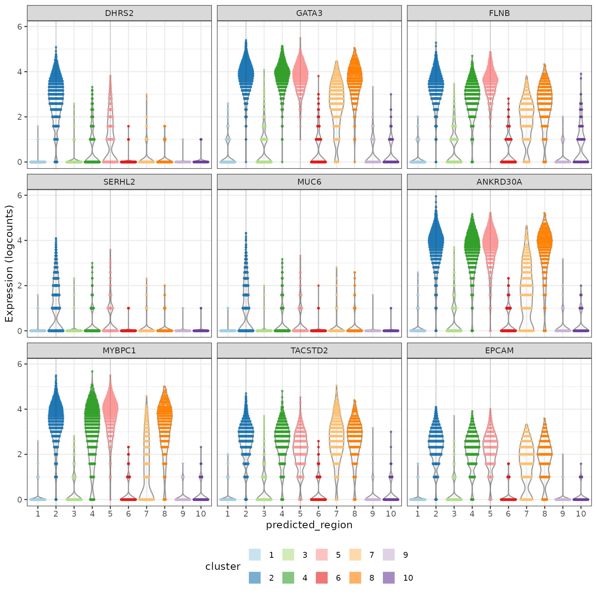
Next we compare the fibroblasts from region 6 (stroma) against those from region 3 (tumour-adjacent). Investigating and visialising the top genes shows that LUM and POSTN are up-regulated in stromal fibroblasts while MMP11 and AQP1 are up-regulated in the tumour-adjacent fibroblasts.
# study markers of Malignant_2
chosen_fibroblasts <- marker.info[["Fibroblast_3"]]
ordered_fibroblasts <- chosen_fibroblasts[order(chosen_fibroblasts$rank.AUC), ]
head(ordered_fibroblasts[, 1:4])## DataFrame with 6 rows and 4 columns
## self.average other.average self.detected other.detected
## <numeric> <numeric> <numeric> <numeric>
## LUM 2.656393 1.972683 0.966006 0.5326797
## RGS5 0.548869 0.104068 0.294618 0.0797112
## MMP11 0.807756 0.167781 0.385269 0.1211576
## POSTN 2.296114 1.318836 0.872521 0.4802572
## AEBP1 1.634483 1.231478 0.824363 0.4990967
## AQP1 0.673749 0.233876 0.410765 0.1800684
plotExpression(idc,
features = head(rownames(ordered_fibroblasts), 9),
x = "predicted_region",
colour_by = "predicted_region",
ncol = 3
) +
geom_vline(xintercept = c(3, 6), lwd = 0.1, lty = 2) +
scale_colour_brewer(palette = "Paired", na.value = "#333333", name = "cluster") +
theme(legend.position = "bottom") +
guides(colour = guide_legend(override.aes = list(shape = 15, size = 5)))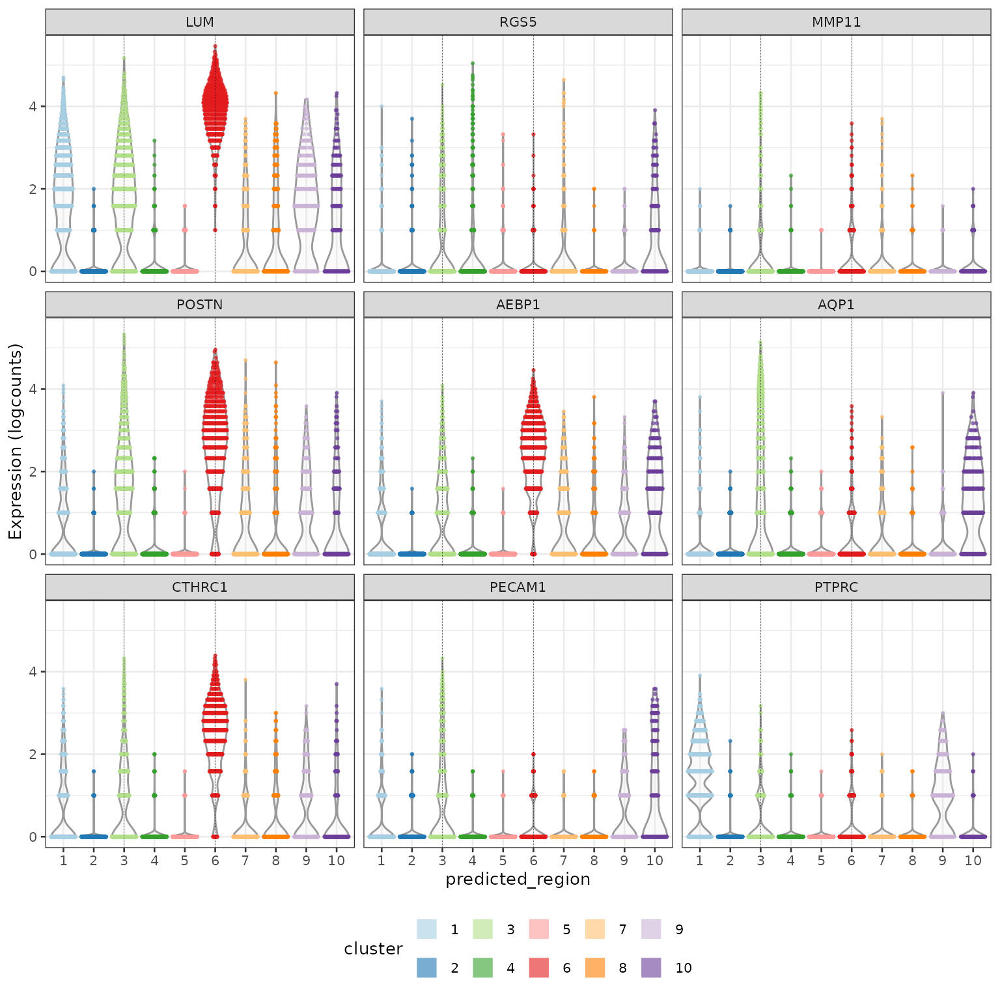
Functional analysis
The example dataset used here was generated using the 10x Xenium platform that measured 380 genes. More recent versions of this platform and competing platforms such as the NanoString CosMx are now providing around 5000 genes (soon whole transcriptome as well!). It is relatively easy to scan through the strongest differentially expressed genes from a list of at most 380 genes to understand the processes underpinning the system. With larger panel sizes, we need computational tools to perform such analyses, often referred to as gene-set enrichment analysis or functional analysis. As this is an extensive topic, it is not covered in depth in this workshop, however, we have previously developed a workshop on gene-set enrichment analysis and refer the attendees to that if they are interested. A non-programmatic interface of some of the tools in our workshop can be accessed through vissE.cloud.
Optional: You can also explore the full dataset from this workshop on vissE.cloud through the following link. This exploratory analysis performs principal components analysis (PCA) or non-negative matrix factorisation (NMF) on the dataset to identify macroscopic biological programs. It then performs gene-set enrichment analysis on the factor loadings to explain the biological processes.
Packages used
This workflow depends on various packages from version 3.20 of the Bioconductor project, running on R version 4.4.2 (2024-10-31) or higher. The complete list of the packages used for this workflow are shown below:
## R version 4.4.2 (2024-10-31)
## Platform: x86_64-pc-linux-gnu
## Running under: Ubuntu 22.04.5 LTS
##
## Matrix products: default
## BLAS: /usr/lib/x86_64-linux-gnu/openblas-pthread/libblas.so.3
## LAPACK: /usr/lib/x86_64-linux-gnu/openblas-pthread/libopenblasp-r0.3.20.so; LAPACK version 3.10.0
##
## locale:
## [1] LC_CTYPE=C.UTF-8 LC_NUMERIC=C LC_TIME=C.UTF-8
## [4] LC_COLLATE=C.UTF-8 LC_MONETARY=C.UTF-8 LC_MESSAGES=C.UTF-8
## [7] LC_PAPER=C.UTF-8 LC_NAME=C LC_ADDRESS=C
## [10] LC_TELEPHONE=C LC_MEASUREMENT=C.UTF-8 LC_IDENTIFICATION=C
##
## time zone: UTC
## tzcode source: system (glibc)
##
## attached base packages:
## [1] stats4 stats graphics grDevices utils datasets methods
## [8] base
##
## other attached packages:
## [1] hoodscanR_1.4.0 XeniumSpatialAnalysisWorkshop_0.99.0
## [3] igraph_2.1.1 vissE_1.14.0
## [5] msigdb_1.14.0 singscore_1.26.0
## [7] SpaNorm_1.0.0 SpatialExperiment_1.16.0
## [9] SingleR_2.8.0 standR_1.10.0
## [11] scater_1.34.0 scran_1.34.0
## [13] scuttle_1.16.0 SingleCellExperiment_1.28.1
## [15] SummarizedExperiment_1.36.0 Biobase_2.66.0
## [17] GenomicRanges_1.58.0 GenomeInfoDb_1.42.1
## [19] IRanges_2.40.0 S4Vectors_0.44.0
## [21] BiocGenerics_0.52.0 MatrixGenerics_1.18.0
## [23] matrixStats_1.4.1 patchwork_1.3.0
## [25] ggplot2_3.5.1
##
## loaded via a namespace (and not attached):
## [1] RColorBrewer_1.1-3 jsonlite_1.8.9
## [3] magrittr_2.0.3 ggbeeswarm_0.7.2
## [5] magick_2.8.5 farver_2.1.2
## [7] rmarkdown_2.29 fs_1.6.5
## [9] zlibbioc_1.52.0 ragg_1.3.3
## [11] vctrs_0.6.5 memoise_2.0.1
## [13] DelayedMatrixStats_1.28.0 prettydoc_0.4.1
## [15] htmltools_0.5.8.1 S4Arrays_1.6.0
## [17] BiocNeighbors_2.0.1 SparseArray_1.6.0
## [19] sass_0.4.9 bslib_0.8.0
## [21] htmlwidgets_1.6.4 desc_1.4.3
## [23] plyr_1.8.9 cachem_1.1.0
## [25] lifecycle_1.0.4 pkgconfig_2.0.3
## [27] rsvd_1.0.5 Matrix_1.7-1
## [29] R6_2.5.1 fastmap_1.2.0
## [31] aricode_1.0.3 GenomeInfoDbData_1.2.13
## [33] digest_0.6.37 colorspace_2.1-1
## [35] AnnotationDbi_1.68.0 dqrng_0.4.1
## [37] irlba_2.3.5.1 textshaping_0.4.0
## [39] RSQLite_2.3.9 beachmat_2.22.0
## [41] sccore_1.0.5 labeling_0.4.3
## [43] fansi_1.0.6 httr_1.4.7
## [45] abind_1.4-8 compiler_4.4.2
## [47] bit64_4.5.2 withr_3.0.2
## [49] BiocParallel_1.40.0 viridis_0.6.5
## [51] DBI_1.2.3 DelayedArray_0.32.0
## [53] rjson_0.2.23 bluster_1.16.0
## [55] tools_4.4.2 vipor_0.4.7
## [57] beeswarm_0.4.0 glue_1.8.0
## [59] dbscan_1.2-0 Banksy_1.2.0
## [61] grid_4.4.2 Rtsne_0.17
## [63] cluster_2.1.6 reshape2_1.4.4
## [65] generics_0.1.3 gtable_0.3.6
## [67] tidyr_1.3.1 data.table_1.16.2
## [69] BiocSingular_1.22.0 ScaledMatrix_1.14.0
## [71] metapod_1.14.0 utf8_1.2.4
## [73] XVector_0.46.0 RANN_2.6.2
## [75] ggrepel_0.9.6 pillar_1.9.0
## [77] stringr_1.5.1 limma_3.62.1
## [79] RcppHungarian_0.3 splines_4.4.2
## [81] dplyr_1.1.4 lattice_0.22-6
## [83] bit_4.5.0.1 annotate_1.84.0
## [85] tidyselect_1.2.1 locfit_1.5-9.10
## [87] Biostrings_2.74.0 knitr_1.49
## [89] gridExtra_2.3 edgeR_4.4.0
## [91] xfun_0.49 statmod_1.5.0
## [93] stringi_1.8.4 UCSC.utils_1.2.0
## [95] yaml_2.3.10 evaluate_1.0.1
## [97] codetools_0.2-20 tibble_3.2.1
## [99] BiocManager_1.30.25 graph_1.84.0
## [101] cli_3.6.3 uwot_0.2.2
## [103] leidenAlg_1.1.4 xtable_1.8-4
## [105] systemfonts_1.1.0 munsell_0.5.1
## [107] jquerylib_0.1.4 Rcpp_1.0.13-1
## [109] png_0.1-8 XML_3.99-0.17
## [111] parallel_4.4.2 pkgdown_2.1.1
## [113] blob_1.2.4 mclust_6.1.1
## [115] ggalluvial_0.12.5 sparseMatrixStats_1.18.0
## [117] viridisLite_0.4.2 GSEABase_1.68.0
## [119] scales_1.3.0 purrr_1.0.2
## [121] crayon_1.5.3 rlang_1.1.4
## [123] KEGGREST_1.46.0